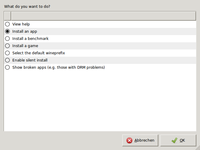

winetricks
Dieser Artikel wurde für die folgenden Ubuntu-Versionen getestet:
Ubuntu 16.04 Xenial Xerus
Zum Verständnis dieses Artikels sind folgende Seiten hilfreich:
Achtung!
Es handelt es sich hier größtenteils um urheberrechtlich geschützte Software, man sollte zur legalen Benutzung also eine Windows-Lizenz besitzen.
Winetricks  ist ein kleines Hilfsskript für Wine, mit dem man zusätzlich, gängige Bibliotheken und Dateien, die öfters unter Windows benötigt werden und recht hilfreich für Wine sein können, installiert. Weiterhin kann man mit diesem Skript einige Einstellungen, zum Beispiel Wahl der Windowsversion, verändern.
ist ein kleines Hilfsskript für Wine, mit dem man zusätzlich, gängige Bibliotheken und Dateien, die öfters unter Windows benötigt werden und recht hilfreich für Wine sein können, installiert. Weiterhin kann man mit diesem Skript einige Einstellungen, zum Beispiel Wahl der Windowsversion, verändern.
Installation¶
Winetricks ist seit Ubuntu 11.04 in den Ubuntu-Softwarequellen. Man kann einfach das folgende Paket installieren [1]:
winetricks (universe [4])
 mit apturl
mit apturl
Paketliste zum Kopieren:
sudo apt-get install winetricks
sudo aptitude install winetricks
Alternative Installation¶
Wenn man eine aktuellere Version braucht oder eine ältere Ubuntuversion hat, kann man es auch manuell installieren. Zur alleinigen Nutzung für den aktuellen Benutzer öffnet man dafür ein Terminal [2] und führt folgendes aus [3]:
mkdir ~/bin wget http://winetricks.org/winetricks -O ~/bin/winetricks chmod +x ~/bin/winetricks
Nun hat man das Winetricks-Skript im Verzeichnis ~/bin/. Wenn man sich das nächste mal anmeldet, hat man ~/bin/ im Pfad ($PATH) und kann es wie unten beschrieben ausführen. Davor funktioniert nur
~/bin/winetricks
Alternativ kann man auch gleich die systemweite Installation für alle Benutzer aufpeppen (Achtung: Wird wieder überschrieben, wenn winetricks über die Paketverwaltung aktualisiert wird):
sudo wget http://winetricks.org/winetricks -O /usr/bin/winetricks
Benutzung¶

Zur Benutzung führt man einfach winetricks aus [4] und erhält damit das dargestellte Fenster. Dort kann man dann die entsprechend benötigte Software mit einem Haken markieren. Nach dem Bestätigen mit OK wird die ausgewählte Datei automatisch aus dem Internet geladen und installiert. Je nach ausgewählter Software kann es hier zu weiteren Aktionen, wie Bestätigen der Softwarelizenz, kommen.
Software die man mit diesem Script aus dem Internet geladen und installiert hat, wird dauerhaft im Home-Ordner ~/.cache/winetricks/ (in einigen Versionen auch ~/.winetrickscache) zwischengespeichert. Auf diese wird im Regelfall zuerst zugegriffen, wenn die entsprechenden Pakete vorhanden sind.
Weiß man, welche zusätzliche Software man benötigt, kann man den Namen des "Pakets" auch einfach an den Aufruf von winetricks anhängen. Zur Installation zusätzlicher Schriften sähe der Aufruf dann z.B. so aus [3]:
winetricks allfonts
Wer mehr installieren möchte, kann durchaus mehrere Softwarepakete, getrennt durch ein Leerzeichen, verwenden. Hier alle Windowsfonts, VLC und Mediaplayer Classic und setzt die verwendete Windowsversion auf Windows XP:
winetricks allfonts vlc mpc winxp
Mögliche Optionen erhält man über folgenden Befehl:
winetricks -h
Liste der verfügbaren Software¶
Um z.B. eine Liste der verfügbaren Software zu erhalten, benutzt man den Befehl:
winetricks list-download
 Hauptartikel
Hauptartikel- Erstellt mit Inyoka
-
 2004 – 2017 ubuntuusers.de • Einige Rechte vorbehalten
2004 – 2017 ubuntuusers.de • Einige Rechte vorbehalten
Lizenz • Kontakt • Datenschutz • Impressum • Serverstatus -
Serverhousing gespendet von